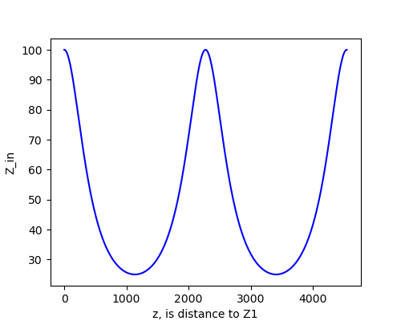

2、λ/4阻抗变换特性¶
传输线方程由入射波+反射波两部分组成：
\[\begin{split}
u=A_1e^{\gamma z}e^{j\omega t}+A_2e^{-\gamma z}e^{j\omega t}\\
i=(A_1e^{\gamma z}e^{j\omega t}-A_2e^{-\gamma z}e^{j\omega t})/Z_0
\tag{2.1}
\end{split}\]
输入阻抗
\[
Z_{in}=u(z,t)/i(z,t)=u(z)/i(z)=Z_0\frac{A_1e^{\gamma z}+A_2e^{-\gamma z}}{A_1e^{\gamma z}-A_2e^{-\gamma z}}
\]
考虑边界条件
\[\begin{split} u(0)/i(0)=Z_0\frac{A_1+A_2}{A_1-A_2}\equiv Z_1\\ i.e.\quad A_1/A_2=(Z_1+Z_0)/(Z_1-Z_0) \end{split}\]考虑无损耗传输，衰减常数 \(\alpha=0 \Rightarrow \gamma=\alpha+j\beta \Rightarrow j\beta\) ，其中 \(\beta=2\pi/\lambda\)
输入阻抗化简为
\[
Z_{in}=Z_0\frac{Z_1+jZ_0\tan{\beta z}}{Z_0+jZ_1\tan{\beta z}}
\tag{2.2}
\]
可以看出，当 \(z=k\frac{\pi}{\beta}=k\frac{\lambda}{2}\) 时， \(\beta z=k\pi \Rightarrow Z_{in}=Z_1\) 。该特性称作 \(\lambda/2\) 阻抗重复性，如下图
